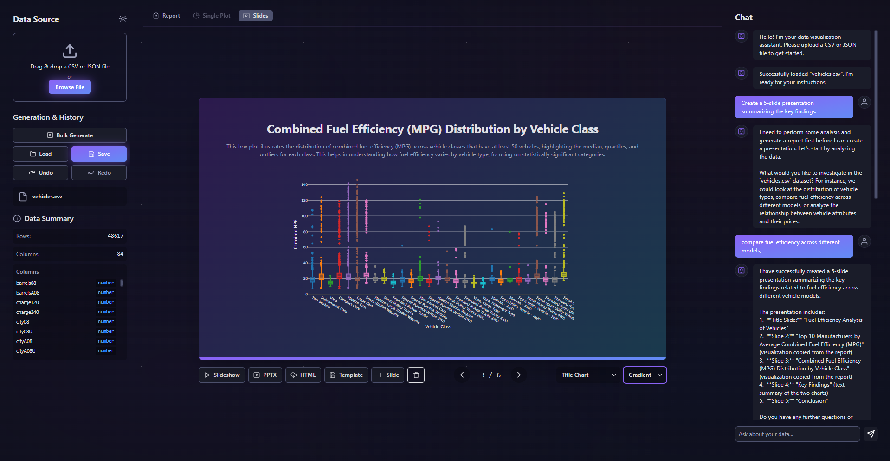
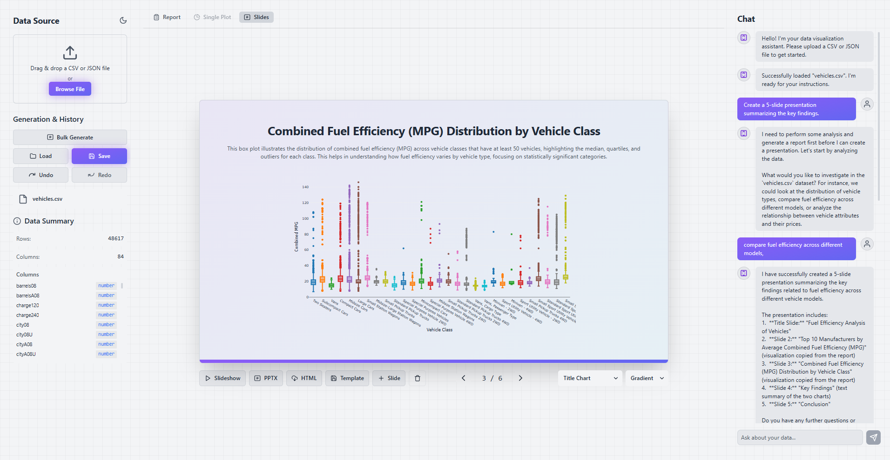

Go from Raw Data to
Boardroom-Ready Deck
Stop wrestling with code. Upload your data, guide our AI Analyst, and receive validated reports and presentation-ready slides in minutes.


A Smarter Workflow, Not Just a Smarter Chatbot.
DataDeck AI is built around a core belief: true insight comes from a partnership between human expertise and AI efficiency. Here's how we make it happen.
AUTO-VALIDATE ENGINE
Analysis You Can Actually Trust.
Our AI doesn't just generate charts; it validates them. It cross-references data, checks for logical errors, and ensures every visualization tells an accurate story. Stop second-guessing your results and present with confidence.
Sales Performance 2023-2024
Q1 23
Q2 23
Q3 23
Q4 23
Q1 24
Q2 24
Q3 24
Q4 24
Validating chart accuracy...
Upload
Data
AI
Suggestions
Report
Generated
Slides
Created
Workflow Progress
0%
Generated Output:
Report
Slide 1
Slide 2
Slide 3
+
ONE-CLICK DECKS
From Complex Report to Polished Deck.
Transform raw data into a narrative report complete with written analysis. Then, convert the entire report into a polished, editable presentation with a single click. Ready for your board meeting in minutes, not days.
ANALYST CO-PILOT
Your Strategy, AI-Powered.
While our AI can work autonomously, you're always in control. Easily steer the analysis, request specific deep-dives, or edit any part of the generated report or slides. It's the perfect partnership of human intuition and AI speed.
See DataDeck AI in Action
Watch how our AI transforms raw data into boardroom-ready presentations in real-time.
Ready to Revolutionize Your Data Workflow?
Join the waitlist and be the first to experience the future of data analysis.